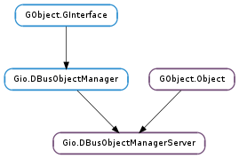

| static | new(object_path) |
| export(object) | |
| export_uniquely(object) | |
| get_connection() | |
| is_exported(object) | |
| set_connection(connection) | |
| unexport(object_path) |
| Name | Type | Flags | Description |
|---|---|---|---|
| connection | Gio.DBusConnection | r/w | The connection to export objects on |
| object-path | str | r/w/c | The object path to register the manager object at |
None
| Name | Type | Access |
|---|---|---|
| parent_instance | GObject.Object | r |
Bases: GObject.Object, Gio.DBusObjectManager
Gio.DBusObjectManagerServer is used to export Gio.DBusObject instances using the standardized org.freedesktop.DBus.ObjectManager interface. For example, remote D-Bus clients can get all objects and properties in a single call. Additionally, any change in the object hierarchy is broadcast using signals. This means that D-Bus clients can keep caches up to date by only listening to D-Bus signals.
See Gio.DBusObjectManagerClient for the client-side code that is intended to be used with Gio.DBusObjectManagerServer or any D-Bus object implementing the org.freedesktop.DBus.ObjectManager interface.
| Parameters: | object_path (str) – The object path to export the manager object at. |
|---|---|
| Returns: | A Gio.DBusObjectManagerServer object. Free with GObject.Object.unref (). |
| Return type: | Gio.DBusObjectManagerServer |
Creates a new Gio.DBusObjectManagerServer object.
The returned server isn’t yet exported on any connection. To do so, use Gio.DBusObjectManagerServer.set_connection (). Normally you want to export all of your objects before doing so to avoid InterfacesAdded signals being emitted.
| Parameters: | object (Gio.DBusObjectSkeleton) – A Gio.DBusObjectSkeleton. |
|---|
Exports object on manager.
If there is already a Gio.DBusObject exported at the object path, then the old object is removed.
The object path for object must be in the hierarchy rooted by the object path for manager.
Note that manager will take a reference on object for as long as it is exported.
| Parameters: | object (Gio.DBusObjectSkeleton) – An object. |
|---|
Like Gio.DBusObjectManagerServer.export () but appends a string of the form _N (with N being a natural number) to object ‘s object path if an object with the given path already exists. As such, the Gio.DBusObjectProxy :g-object-path property of object may be modified.
| Returns: | A Gio.DBusConnection object or None if manager isn’t exported on a connection. The returned object should be freed with GObject.Object.unref (). |
|---|---|
| Return type: | Gio.DBusConnection |
Gets the Gio.DBusConnection used by manager.
| Parameters: | object (Gio.DBusObjectSkeleton) – An object. |
|---|---|
| Returns: | True if object is exported |
| Return type: | bool |
Returns whether object is currently exported on manager.
| Parameters: | connection (Gio.DBusConnection or None) – A Gio.DBusConnection or None. |
|---|
Exports all objects managed by manager on connection. If connection is None, stops exporting objects.
| Parameters: | object_path (str) – An object path. |
|---|---|
| Returns: | True if object at object_path was removed, False otherwise. |
| Return type: | bool |
If manager has an object at path, removes the object. Otherwise does nothing.
Note that object_path must be in the hierarchy rooted by the object path for manager.